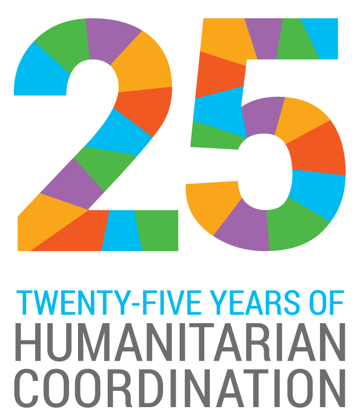
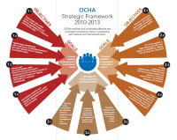

OCHA とは
国連人道問題調整事務所(UN Office for the Coordination of Humanitarian Affairs OCHA・オチャ) は、国連事務総長が直接率いる国連事務局の一部として、自然災害や紛争などにより、最も弱い立場におかれている人々の、いのちと尊厳を守るため、国連総会決議46/182によって設立されました。
「Coordination Saves Lives－コーディネーションでいのちを救う」をモットーに、各国政府や他の国連機関、赤十字、そして国際NGO等と連携し、緊急・人道支援活動の具体的調整、必要な資源の動員、円滑かつ効果的に支援活動を進めるためのコミュニケーションと情報管理、啓発・理解促進、そして国際的な人道課題に関する政策形成を担っています。
OCHA自体が支援物資を配給したり、医療などのサービスを提供することはありませんが、支援を必要とする国毎に様々な人道ニーズやプライオリティを把握し、包括的かつ戦略的な対応計画を取りまとめる作業を担当しています。加えて世界各地の最新の人道状況を報告することで最善の情報を行き渡せ、被災者の方々自身も含め、皆がベストの意思決定が出来るようサポートしています。
一方で、国内で避難を余儀なくされている方々や、戦火に巻き込まれた一般市民を護るため、声なき声の代弁者となることもOCHAの使命です。人道性、中立性、公平性そして独立性という人道原則を護持し、時に困難な状況にあっても、国際人道コミュニティーの中で決断力、リーダーシップを発揮し、必要な説明責任を果たしていくことも求められています。
OCHAの本部はニューヨークとジュネーブに置かれていますが、2016年現在約60箇所の現地事務所で2,300名弱のスタッフが現地に根ざした活動を展開しています。OCHAの活動資金は約95％が任意拠出金に依存しており、日本はOCHAの活動を支える大切なドナー国の一つです。特に、OCHAは年間予算約4.5億米ドルの国連人道基金(Central Emergency Response Fund：CERF)を管理し、現地での大きな成果につなげています。
"This is OCHA"(OCHAについての英語版パンフレット)>>
OCHA設立から25年のタイムライン（英語）>>
「OCHA設立から25年 」ビデオ（英語）>>
「OCHAが担う人道支援の調整活動－ハイチの場合」ビデオ（日本語字幕付）>>
関連リンク
- OCHAウェブサイト
- OCHAフェイスブック
- OCHAアジア太平洋地域事務所
- 国連総会決議 46/182
- 国際緊急援助におけるUNOCHAの援助調整と日本の取り組み―国際協力研究Vol.22 No.1